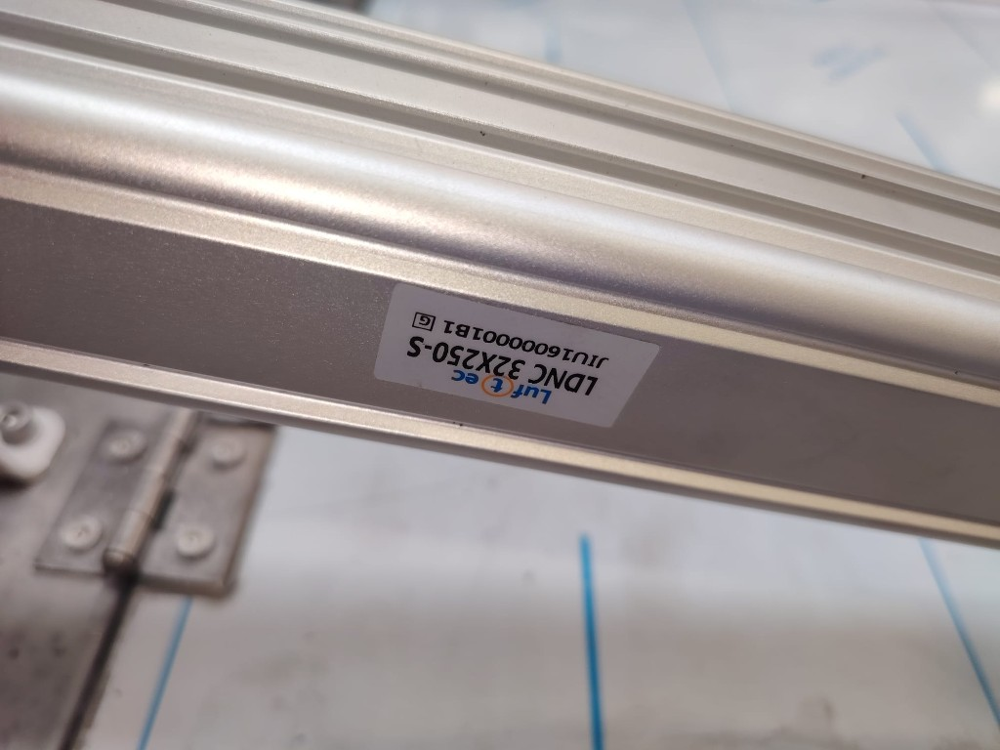

Sıfırdan giriş · piston iç yapısı (interaktif) · makine çizimi · formül · D8/D4 · LDNC 32×250-S · 4V230E-08
Parçaların hepsi belli: kapak menteşeli, iki piston, valf, hortum. Yine de düğmeye basınca iki kötü şeyden biri oluyor:
ya hava dolana kadar 5–6 saniye hiçbir şey olmuyor, sonra kapak fırlıyor;
ya da beklemıyor ama çok sert açılıp kapanıyor.
Bu sayfa bitince ikisinin de nedeni ve ne takman gerektiği net olacak.
Geç kalkıyor
Düğmeye basıyorsun. 5–6 saniye kapak yerinde duruyor. Sanki hava birikiyor. Sonra birden kalkıyor.
Sert gidiyor
Bekleme yok. Kapak hemen gidiyor ama vurarak. Yataya inerken özellikle çarpıyor. Dikeyde de son anda vuruyor.
İkisi de “valf bozuk” değil. İkisi de havanın ne kadar dolması gerektiği ile kaçmasına izin verdiğin hız yüzünden. Aşağıda önce makineyi, sonra havayı, sonra çözümü göreceksin.
Kapak bir kapı gibi menteşeden döner. İki piston kapağın yanlarında. Unutma:
Aç (yükleme, dikey) = piston kısalır = mili içeri çeker.
Kapat (banyo, yatay) = piston uzar = mili dışarı iter.
Yerçekimi kapatır. Kapak ağır. Menteşe arkada. Kendi haline bırakırsan yataya düşmek ister — yani kapanmak ister. Açmak = ağırlığı kaldırmak. Kapatmak = ağırlığın zaten gittiği yön. Bu yüzden kapanış her zaman daha tehlikeli ve daha sert olur.
3. Beş kelime, gerisi hikâye
Piston / silindirLuftec LDNC 32×250-S. İçinde bir mil var. Hava bir tarafa basılırsa mil uzar, diğer tarafa basılırsa kısalır. Çap 32 mm, mil en fazla 250 mm gider.
Valf4V230E-08. Kumanda. “Aç” bobini veya “kapat” bobini hangisi enerjiliyse havayı o yöne yollar. Kendisi hız ayarlamaz, sadece yön seçer.
OdaPistonun içinde iki boşluk: kapak odası (mil uzar) ve mil odası (mil kısalır). Biri dolar, diğeri boşalır. İkisi birden dolu kalamaz hareket için.
EgzozBoşalan odadaki havanın valften dışarı çıkması. Hızı asıl egzoz belirler. Giren hava “iteç”, çıkan hava “fren”.
Kısıcı (iğne)Hortumdaki musluk. Sıkınca hava zor geçer. Doğru yer: çıkan hava. Yanlış yer: giren hava — o zaman bekler, sonra fırlar.
Çek valfTek yönlü kilit. Hava bir taraftan girer, geri kaçmaz. Plot (ince D4 hortum) “kilidi aç” der. Kapak dikeyde kalsın diye mil odasına konur.
Hortum isimleri: D8 kalın iş hattı, D4 ince plot hattı. D8 işi yapar, D4 kilidi açar.
4. Pistonun iki girişi
LDNC 32×250-S · G1/8 iki port
Hareket için her zaman bir oda dolar, diğer oda boşalır. Dolan taraf itme verir. Boşalan taraf fren yeridir. Kısıcıyı doldurulan porta koyarsan piston “hava biriksin, yeterince basınç olsun, sonra fırlasın” diye bekler. Kısıcıyı boşalan porta koyarsan baştan sona yavaş gider. Smooth’un bütün sırrı bu.
5. Pistonun içi — basit anlatım
Yeni başlayan · 3 parça · 2 hareket
Silindir = metal tüp + içinde kayan piston + dışarı çıkan mil (çubuk).
Hortumdan hava girince piston kayar; mil de hareket eder. Kapağa bağlı olan da bu mil.
Tüpün içinde pistonun iki yanında iki boşluk var — ikisine de oda diyoruz.
Biri dolarken diğeri boşalır. Hangi tarafa hava verirsen piston o yöne gider.
1. Ne olsun? · 2. Çizime bak · 3. Mil kaydır (istersen)
Senaryo: Normal — valf tam açık, kısıcı yok (hızlı hareket, sert olabilir).
Ne öğrenmek istiyorsun?
Şu an: KAPAT. Sol taraftaki boşluğa hava geliyor. Piston sağa itiliyor, mil dışarı çıkıyor. Kapak yatay (tank kapalı).
Sol oda (kapak tarafı)
Sağ oda (mil tarafı)
Hava doluyor Hava çıkıyor Piston
① TüpDış kabuk. Piston bunun içinde kayar.
② PistonHavanın ittiği disk. Contalar havanın karşı tarafa kaçmasını engeller.
③ MilPistonla birlikte giden çubuk. Makinede kapağa bağlı.
İki oda kuralı: Biri şişerken diğeri söner — ikisi aynı anda “dolu dolu” kalarak hareket edemez.
Dolan taraf ittirir; boşalan taraftan hava dışarı gider (egzoz).
Giriş kısıcı (meter-in): Valften gelen hava hortumda/iğnede sıkışır → basınç geç yükselir → piston geç kalkar, sonra egzoz serbestse fırlar.
Çıkış iğnesi (meter-out): LDNC …-S’te fabrika yastığı yok; stroku yumuşatan şey genelde boşalan odanın egzozundaki iğne. Sıkınca hareket baştan sona yavaşlar, sona vurma azalır.
Çek valf (mil portu): Hava mil odasına girer ama geri kaçamaz. Valf ortada tahliye etse bile mil odası kilitli kalır → kapak dikeyde durabilir.
6. Valf ne yapar, ne yapmaz
4V230E-08 · 5/3 · orta E = boşaltma
Valfte iki bobin var. Biri Aç, biri Kapat. Katalog debisi ~890 NL/dk — Ø32 piston için bu bir yangın hortumu. Valf hız kesmez. Yön seçer, kapı gibi açılır, hava akar.
Bobin
Hava nereye
Kapak
A (kapat)
Kapak odasına basar, mil odasını boşaltır
Yataya iner
B (aç)
Mil odasına basar, kapak odasını boşaltır
Dikeye kalkar
İkisi de kapalı (orta)
Bu valfte E = iki oda da tahliye
Kilit yoksa kapak düşer
Bu valfin ortası “dur” değildir. 4V230E’nin E harfi boşaltma demek. Düğmeyi bırakınca (yay merkeze alınca) her iki oda da dışarı açılır. Piston havasız kalır. Sonraki basışta hortum + oda sıfırdan dolar → 5–6 saniye bekleyişin en sık sebebi budur. Üstüne kilit yoksa kapak yataya düşer.
Durdurmak istiyorsan valfin ortasına güvenme. Mil portuna çek valf koy: dikeyde mil odasındaki hava kilitlenir, kapak düşmez. Valfi hareket bitene kadar basılı tut; ortayı “park” sanma.
7. Neden 5–6 saniye hiçbir şey olmuyor?
Ölü zaman = basınç henüz ağırlığı yenemedi
Kapak yatayken yerçekimi momenti en büyük. Açmak için mil odasındaki basınç, ağırlığı yenecek kuvvete çıkmalı. O basınca gelene kadar mil kımıldamaz. Sen “bozuk” görürsün; aslında hortum ve oda doluyordur.
1
Düğmeye bastın. Valf açıldı. Hava henüz pistonda değil, hortumun başında.
2
D8 hortum (metrelerce) + mil odası doldurulur. Basınç 0’dan 4–5 bara tırmanır. Kapak duruyor.
3
Basınç yeter. Kapak kalkmaya başlar. Kalkınca yerçekimi azalır (dikeye yaklaşır). Fren yoksa birden hızlanır — “bekledi, fırladı”.
Bunu uzatan şeyler
Valf orta E. Her bırakışta odalar boşalır. Her açışta sıfırdan dolum.
Uzun / kalın hacim. D8 4 m × 2 piston = doldurulacak çok litre.
Kısıcı yanlış yerde (meter-in). Giren havayı kısarsan basınç yavaş yükselir. 5–6 saniye birikir, sonra egzoz açıksa fırlar. Tam senin tarifin.
Çek valfin plot’u geç açılıyor. Kapatırken mil odasının boşalması D4 plot + iğneye bağlı. Plot yoksa veya tıkalıysa kapanmaz / geç kapanır. Açılışta çek valf doldurmayı engellemez (serbest yön); gecikme açılıştaysa asıl sebep dolum + meter-in + boşaltılmış odalar.
Kural: Bekleyip fırlıyorsa kısıcıyı girişten çıkar, çıkışa al. Hızı kısacaksan her zaman boşalan odanın egzozunu kıs (meter-out).
8. Neden çok sert açılıp kapanıyor?
Valf yangın hortumu · yerçekimi yardımcı · yastık yok
Kısıcı yoksa süre, valfin ve hortumun izin verdiği kadar kısadır — genelde 1 saniyenin altı. Kapak çarpar.
Kapatırken yerçekimi aynı yönde. Egzoz (mil odası) serbestse kapak kendi ağırlığıyla düşer. Piston sadece “yol açmış” olur. Fren = mil portunun egzozu.
Açarken bir kere koptu mu yerçekimi azalır, valf hâlâ tam açık, hız artar. Fren = kapak portunun egzozu.
LDNC …-S yastıksız gövde. Strok sonunda yumuşatma yok. Son 2 cm’yi iğne halleder.
Kapı durdurucusu gibi düşün. Kapıyı iten sen (giren hava), kapanış hızını ayarlayan yavaşlatıcı kol (çıkan hava). Kolu kapı koluna değil menteşe amortisörüne koyarsın. Pistonda amortisör = egzoz kısıcısı.
9. Üç hâli kendi gözünle gör
Aynı kapak, üç ayar
Yeşil = aç (dikey). Kırmızı = kapat (yatay). Önce mod seç, sonra tuşa bas.
Açılış hızı. Meter-out: dolum serbest, çıkış kısık.
D8 eşit boy
Valf → her port, sol = sağ
Biri kısa biri uzunsa kapak yamulur, bir taraf geç kalır.
D4 plot × 4
Her portta ince dirsek, çapraz T
Karşı hattın çek valfini açar. KBN’deki mantığın aynısı; burada “alt” = mil portu.
T1 / T2
T1 = kapak D8 + mil D4 → valf A T2 = mil D8 + kapak D4 → valf B
Çapraz: iş havası bir porttan, kilidi açan plot diğerinden.
Neden mil portu kilit? Dikeyde mil kısa, mil odası dolu. Yerçekimi mili uzatmak (kapatmak) ister. Valf ortası E boşaltırsa o oda kaçarsa kapak düşer. Çek valf kaçışı keser. Kapatmak istediğinde D4 plot kilidi açar, iğne yavaş indirir.
11. Makinenin başında sıra
Sırayı atlama — yoksa yine fırlar
1
Hortum. Sol ve sağ D8’i aynı boyda kes. Valfi pistona mümkün olduğunca yaklaştır. Her açışta sıfırdan dolum olmasın diye valfi hareket bitene kadar basılı tut; ortayı durak sanma.
2
Kısıcı yeri. Varsa girişteki iğneleri sök, egzoza al. Kapak portu = açılış freni. Mil portu = kapanış freni + çek valf.
3
İğneleri kapat. Önce neredeyse tam sık. İlk hareket çok yavaş olsun. Hiç hareket yoksa yarım tur aç — hâlâ 5 saniye bekleyip fırlıyorsa o iğne hâlâ giriştedir, yerini kontrol et.
4
Önce açılışı ayarla. Dikey 4–6 saniyede bitsin. İki tarafın tur sayısı aynı. Kapak yamuluyorsa bir tarafın D8’i kısa veya iğnesi daha açık demektir.
5
Sonra kapanışı ayarla. Yataya inme de aynı süre. Burası yerçekimi yüzünden daha açık iğne ister gibi gelir — aldanma, mil egzozunu daha sıkı tut. Çarpıyorsa sık.
6
Son 20 mm. S gövde yastıksız. İğne tüm stroğu yavaşlatır; son vuruş hâlâ varsa iğneyi biraz daha sık veya PPV’li gövdeye geç. Basıncı 6 barın üstüne çıkarma — kuvvet artar, hız da artar.
7
Geç kalkış bitmedi mi? Valf gerçekten hareket boyunca enerjili mi? Hortum metresi? Girişte kısıcı kaldı mı? FRL tıkalı mı, su var mı? Bunlar duruyorsa 5–6 saniye dolum normaldir — hacmi küçült (hortumu kısalt), dolumu kısma.
12. Makine çizimi, formül ve hat
Eski cizim.html içeriği burada — 3/4 görünüş, yan kesit, canlı HAB, hat şeması.
Piston uzar → kapak tankın üstüne yatay (foto 1, banyo kapalı).
Piston kısalır → kapak dikeye kalkar (foto 2, yükleme açık).
Menteşe tank ağzının arka kenarı. Silindirler kapağın film yüzünde.
FOTO 1 · PİSTON AÇIK Kapak yatay, mil uzun, iki kulak kapak üstünde.
FOTO 2 · PİSTON KAPALI Kapak dikey, mil kısa, L ayak tankta, makara menteşede.
Makine — 3/4 (foto 1 açı) + yan kesit
3/4 görünüş
Yan kesit — HAB üçgeni fotoğraftaki yerinde
Hareket
Pnömatik — piston, valf, D8

Bu makinedeki piston
Luftec LDNC 32×250-S · ISO 15552 · Ø32 · strok 250 mm · mil Ø12 · port G1/8. Fotoğraftaki etiket. S = standart gövde (PPV yastık bu kodda yok).
Parça
Kod
Ne işe yarar
Piston
LDNC 32×250-S × n
Mil uzar → kapak yatay. Mil kısalır → kapak dikey.
Valf
4V230E-08
5/3, çift bobin, port 1/4". Orta konum E = boşaltma. Katalog debi ~890 NL/dk.
Hortum
D8
PU 8 mm dış, varsayılan iç 5 mm. Boy sağ panelden değişir. Sol / sağ eşit olsun.
Smooth hareket — yapman gerekenler
Formüller — adım adım
Yedi adım: nokta → silindir boyu → strok → kol → yerçekimi → kuvvet → süre. Sağdaki ölçüler “Bu anda” kutusunu doldurur.
1
Noktaları koy
Menteşe H orijin. Kapak yalnız H etrafında döner. θ = 0° yatay (tank kapalı), θ = 90° dikey (yükleme).
B = piston kulağı, H’den r. A = L-ayak, tankta sabit.
Bx = r · cos θ By = r · sin θ
A = (Ax , Ay)
Çıktı: her açıda B’nin yeri. A değişmez.
2
Silindir boyunu ölç — s(θ)
Piston yalnız A ile B arasındaki mesafeyi değiştirir.
s(θ) = √[(Bx − Ax)² + (By − Ay)²]
θ = 0° → s uzun (mil dışarı, kapak yatay). θ = 90° → s kısa (mil içeri, kapak dikey).
3
Strok sığar mı?
Pistonun gitmesi gereken yol, iki uçtaki s farkıdır. Katalog stroğundan küçük kalmalı; pay ≥ 8 mm.
tmin < thedef ise egzoza kısıcı (meter-out) koy; iğne ile t → thedef.
=
Bu anda — senin sayılar
Piston girişleri — D8 hava + D4 plot şeması
Her LDNC girişinde iki hortum vardır: kalın D8 esas (iş havası) ve ince D4 plot (çek valfi açan pilot). Makinede 2 piston; şema birini gösterir, diğeri aynı, T1/T2’ye paralel bağlanır.
D8 esas hat D4 plot / pilot Çek valf + iğne (yalnız mil portu) T1 / T2 çapraz 4V230E-08 A / B
Nasıl çalışır
Bobin A (HAT A). Kapak odasına D8 basılır. Aynı anda mil-D4 plot, mil portundaki çek valfi açar. Mil odası iğneden egzoz olur → mil uzar, kapak yerçekimiyle yataya iner. İğne = inme hızı.
Bobin B (HAT B). Mil odasına D8 basılır; çek valf serbest doldurur (yay yönü). Kapak odası D8 + D4 ile boşalır → mil kısalır, kapak dikeye kalkar.
Valf orta E veya hava kes. 4V230E her iki odayı tahliye eder. Çek valf mil odasını kilitler: kapak dikeyde kalır, yataya düşmez. Orta konumu durdurucu sanma — kilidi valf değil çek valf yapar.
İkinci piston. Aynı şema. Sol ve sağ D8’ler T1/T2’ye paralel, eşit boy. İğne turları aynı; yoksa kapak yamulur.
Kullanılacak ürünler
Ürün
Kod / ölçü
Adet
Nereye
Silindir
Luftec LDNC 32×250-S · G1/8
2
Sol + sağ
Yön valfi
AIRTAC / Luftec 4V230E-08 · 5/3 E · 1/4"
1
Ortak A / B
Esas hortum
PU D8 (8×5)
4 × boy
Her piston, 2 port
Plot hortum
PU D4 (4×2,5)
4 × kısa
Her port dirsek → karşı T
D8 rakor
G1/8 → D8
4
İki piston × iki port
D4 plot dirsek
G1/8 → D4
4
Her girişte ince dirsek
Çek valf + iğne
G1/8 PCV / ASC tipi
2
Her pistonin mil portu
T birleştirme
D8 + D4 çapraz
2
T1 ve T2, valfe gidiş
Tek yönlü kısıcı
ASC G1/8 meter-out
2–4
Mil egzoz şart; kapak odası opsiyon
Neden mil portu? Kapak dikeyken mil kısalmış, mil odası dolu. Yerçekimi milin uzamasını ister. Hava kesilince 4V230E orta E her iki odayı boşaltır — mil odası tahliye olursa kapak yataya düşer. Çek valf mil odasını kilitler. D4 plot, kapak odasına D8 basılınca çek valfi açar; ancak o zaman kontrollü iner.
Çapraz T: T1 = kapak-D8 + mil-D4 → valf A (uzama / yatay). T2 = mil-D8 + kapak-D4 → valf B (çekme / dikey). Plot, karşı portun esas hattını açar. KBN dikey kayar kapaktaki ile aynı mantık; oradaki “alt port” burada mil portudur.
L, r, A fotoğraftan kaba. Şerit metre ile dört sayı: L, r, A öne, A yukarı — strok ve kuvvet kilitlenir. Makara karşı ağırlık değilse 0 bırak.
Tek sayfada özet
Aç = mil kısalır. Kapat = mil uzar. Yerçekimi kapatır.
Valf yön seçer, hız kesmez. 4V230E orta konum odaları boşaltır — durdurmaz, sonraki açışı geciktirir.
5–6 saniye bekleyip fırlama = oda boş + hortum dolumu, çoğu zaman girişteki kısıcı.
Sert gitme = egzoz serbest + yerçekimi. Fren = çıkan hava.
Mil portuna çek valf + iğne. Kapak portuna meter-out kısıcı. D8 sol/sağ eşit.
İğneyi kapalıdan aç. Önce açılış, sonra kapanış, aynı süre, aynı tur.